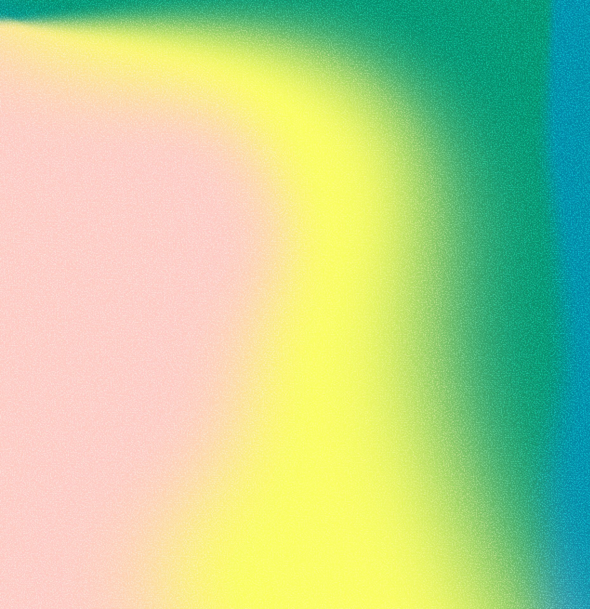

2019 - 2023
Formlabs
Senior R&D Engineer & Tech Lead
I build products from first prototype to production. I lead process R&D, turn messy physics into manufacturable systems, and translate complex problems into clear decisions for teams and leaders. Currently developing volumetric additive manufacturing at Georgia Tech; previously process R&D and leadership at Formlabs.
Senior R&D Engineer & Tech Lead
Volumetric polymer sintering via RF energy delivery—10x speed potential, infinite recyclability, and novel material modalities
$100 flatbed scanner + Python/OpenCV for dimensional jetting diagnostics
Learn More →
A ridiculously over-engineered automatic bottle opener built in college—featured on Hackaday article and podcast
Watch the Video →Want to check out my older work? Explore my undergraduate projects, leadership roles, and early industry experience from 2017-2021.

10+ years studying and performing jazz. Lead alto in NIU Jazz Orchestra. Music taught me to listen, collaborate, and improvise—skills that translate directly to engineering.
I'm always open to discussing additive manufacturing, research collaborations, or industry opportunities.
Selective Laser Sintering R&D • Somerville, MA
At Formlabs, I worked on the Fuse series of SLS 3D printers, progressing from intern to Tech Lead. I owned thermal and optical subsystems, managed cross-functional programs, and authored 30+ technical reports that enabled data-driven engineering decisions. The calibration tools and process characterization systems I developed are actively deployed across tens of thousands of Fuse printers today—including notable makers like Adam Savage.
My most widely deployed tool—used by customers, field engineers, and makers like Adam Savage. Diagnostic part with torque spinners, dimpling grids, and birchbark cones for visual/mechanical assessment of thermal uniformity.
 Diagnostic Tool
Diagnostic Tool
 Adam Savage's Setup
Adam Savage's Setup
Left: Adam Savage's Fuse 1+ 30W (tool at 7:42) • Right: Official Formlabs tutorial
Despite its "plus" naming, the Fuse 1+ 30W was a complete rebuild of Formlabs' SLS platform—new optical systems, thermal systems, material handling, PCBAs, electronics, and software. I served as Technical Program Manager from EVT through production launch, coordinating 30+ engineers across 130+ ECOs to deliver the program in just 9 months—the fastest full printer launch in Formlabs history.
Program leadership:
Factory & production:
Impact:
Additional research enabling data-driven decisions for next-generation SLS development:
LEGO approached us with a challenge: if we could achieve sub-100μm tolerance, they would equip their facilities with multiple Fuse printers. I developed a per-printer calibration tool using Gage R&R methodology and Outer Boundary Offset correction for thermal bleed, improving factory standard performance by 3x to achieve ±100μm tolerance. This enabled LEGO to deploy Fuse printers in their production lines—not just for jigs and fixtures, but for end-use pieces as well.
Documentation →Increased print speed 30% via thermal optimization. Achieved 33% interlayer time improvement, yielding approximately 4 hours of free build time per print job.
Systematic study of high-power lasers (30W-120W). Introduced peak irradiance as key metric and recommended 70W/500μm as optimal configuration.
Correlated bed temperature distribution with part quality. Found thermal uniformity drives elongation at break (6% center vs 4% edges).
Proved 800μm spot feasibility via Central Composite Design. Achieved 40% Z-EAB improvement and ~10% speed gain.
Challenged industry assumption of 104 W/cm² threshold. Proved Nylon 12 prints at 336 W/cm² (30x lower), validating VCSEL array feasibility.
April 2023 - September 2023
May 2021 - April 2023
TPM responsibilities detailed in featured section above.
Print Process Engineering:
May 2019 - September 2019
Georgia Tech • Digital Design & Manufacturing Lab
RFAM is a novel volumetric approach combining layerwise dopant deposition with volumetric RF heating to sinter polymers. Carbon/graphite-doped nylon powder is exposed to an RF field between copper electrode plates—the dopant selectively absorbs RF energy, generating heat that melts the surrounding nylon, enabling particle coalescence and part densification. Unlike laser sintering that scans sequentially, RFAM heats the entire build volume simultaneously—enabling order-of-magnitude improvements in speed, energy efficiency, and material utilization.
Solid Freeform Fabrication Symposium 2025 • Austin, TX
Proposal presentation (September 2025)
Dr. Carolyn C. Seepersad (Woodruff Professor) & Dr. Christopher J. Saldaña (Ring Family Professor)
Dimensional Metrology of Jetting Fidelity in Binder Jet AM
A low-cost, scanner-based diagnostic pipeline for quantitative dimensional metrology of jetting outcomes in binder jet additive manufacturing (BJAM). The approach combines high-resolution flatbed scanning (4800–9600 dpi, ~5.3 μm pixel pitch) with open-source Python/OpenCV computer vision to extract feature-specific metrics, producing standardized aggregate and per-instance data products suitable for iterative calibration.
Manuscript submitted — Additive Manufacturing Letters
A Low-Cost Scanner-Based Diagnostic Pipeline for Dimensional Metrology of Jetting Fidelity in Binder Jet Additive Manufacturing
Additive Manufacturing Letters (submitted)
On the Role of Interface Strategy in Multi-Scale Hybrid Additive Manufacturing
npj Advanced Manufacturing 2, 38 (2025)
doi.org/10.1038/s44334-025-00034-zMachine Design and Process Development of Volumetric Polymer Powder Bed Fusion by Radio Frequency Additive Manufacturing
Solid Freeform Fabrication Symposium, Austin, TX (2024)
Radio Frequency Additive Manufacturing (RFAM): A Roadmap to Precision Parts via Platform Design and Low-Cost Jetting Diagnostics
Solid Freeform Fabrication Symposium, Austin, TX (2025)
Impact of Heat Input and Step Over Distance on Part Geometry for Multi-Bead WAAM Components
ASME MSEC 2024, Knoxville, TN
doi.org/10.1115/MSEC2024-122007
Featured on Hackaday • Built in College (2020)
Sometimes the best engineering projects are the ones that solve problems nobody asked to be solved. This ridiculously over-engineered automatic bottle opener was built with friends during college—and ended up getting featured on Hackaday's website and podcast.
*Listed as #99 because Hackaday uses zero-indexed episode numbering
10+ Years of Performance & Study
I studied Jazz Saxophone Performance at Northern Illinois University, playing lead alto in the NIU Jazz Orchestra and Ensemble under the direction of Geof Bradfield, Reggie Thomas, and Rich Moore.
Music taught me to listen deeply, collaborate effectively, and think on my feet—skills that translate directly to engineering leadership and research.
Geof Bradfield, Reggie Thomas, Rich Moore